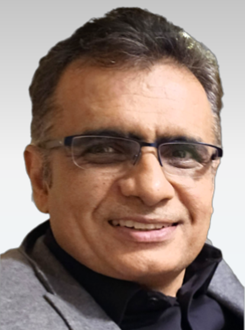

Pranay Prakash (Synopsys)
Title: Challenges and Opportunities for AI in Commercial Synthesis Tools
Bio
Pranay, a seasoned EDA professional, is passionate about integrating AI into the design domain. As Sr. Director of R&D at Synopsys AI Center of Excellence, he spearheaded the development of DSO.ai, the industry's first AI-powered reinforcement learning technology. This innovative solution accelerates chip design processes and significantly improves power, performance, and area (PPA) closure.
Since its market launch, Pranay has led the scaling of DSO.ai across major semiconductor companies. His previous experience includes managing R&D teams for ASIC/FPGA implementation tools at Altera/Intel and Magma. He has a proven track record in logic/physical synthesis, placement, and compiler technologies.
Pranay's interests extend to machine learning, hardware acceleration, and bringing cutting-edge products to market.